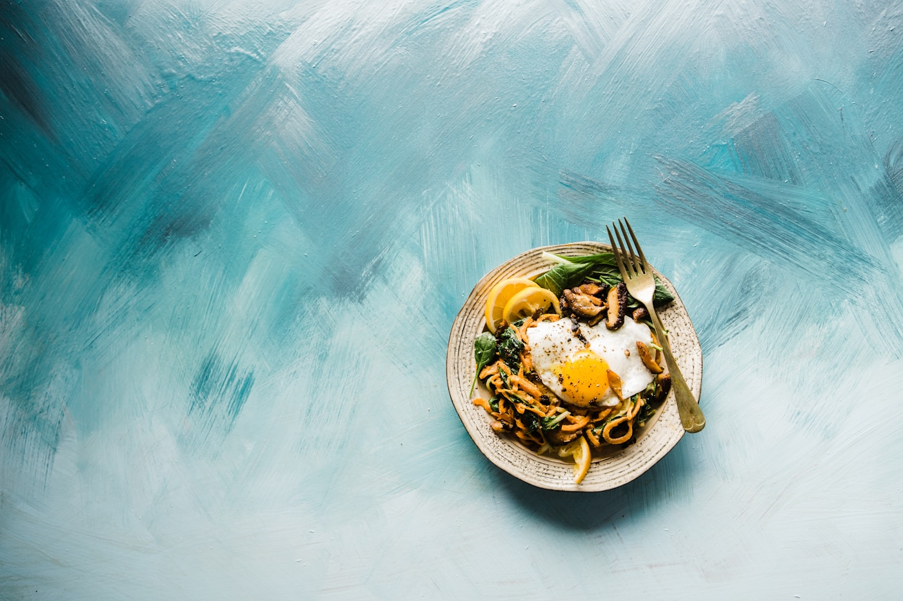
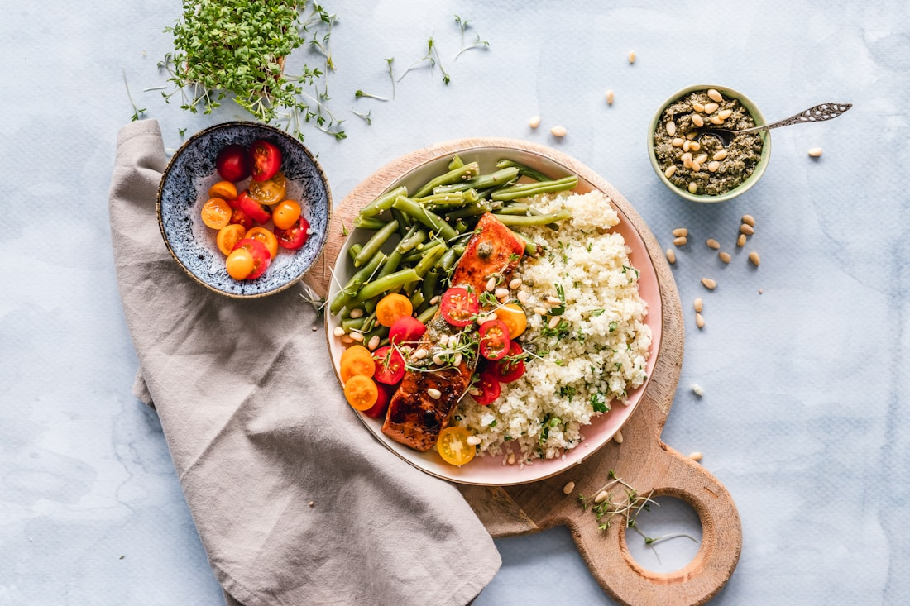

A modern restaurant / London
Eat
curiously.
A room for generous plates, open fire and the kind of evenings that refuse to be rushed.

Open Tuesday—Saturday
17:30 — 23:00
17:30 — 23:00
The Atrium approach
Ingredient first.
Always.
↗
Tonight at Atrium
The menu changes with the market. Come hungry, leave with a new favourite.
See tonight's menu ↗